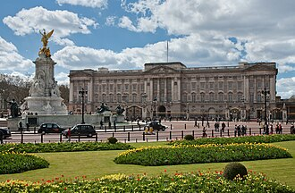
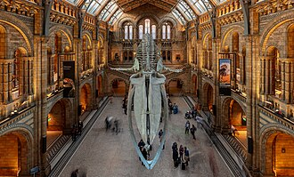
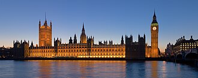
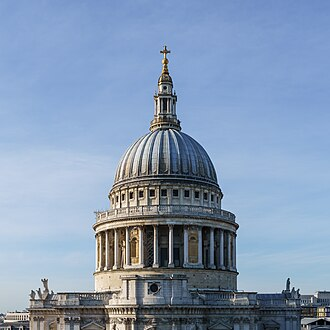

Исторические и справочные гербы


London
Путеводитель. Объектов в этом выпуске: 32.
OTIUM — практика нарочитого досуга. В античном смысле otium — не побег от работы, а время, когда внимание возвращается к памяти, пейзажу и мысли — без прикладного дедлайна.
Мы выстраиваем маршруты для неспешного присутствия, а не для чек-листа достопримечательностей: важно быть в месте, а не «потреблять» виды.
OTIUM — не туроператор. Это приглашение пройтись, остановиться и оставить маршрут незавершённым, если свет на фасаде заслуживает ещё минуты.
Исторические и справочные гербы
Путеводитель. Объектов в этом выпуске: 32.
Лондон — столица Соединённого Королевства и крупнейший город Британских островов.
Римский Лондиниум, средневековый Сити, имперская столица и глобальный финансовый центр XXI века. Темза, королевские резиденции, музеи бесплатного входа и многоязычные районы делают Лондон узлом культуры и науки.
Вторая мировая война и блиц оставили следы; послевоенное восстановление и распад империи изменили роль метрополии. Сегодня Лондон — финансовый и культурный глобальный узел с многоязычным населением и богатыми музеями.


Национальный музей истории, искусства и культуры с бесплатным входом. Большой двор окружает Зал для чтения под стеклянным навесом. Среди основных достопримечательностей — Розеттский камень и скульптуры Парфенона (выставление зависит от политики займов/аренды). Билеты с ограничением по времени действительны для крупных временных выставок.
Происходил из завещания сэра Ханса Склоуна и превратился в глобальную коллекцию; проект «Большой дворик» открыл внутренний двор для посетителей. Одно из самых посещаемых музеев мира и центр неспешных дневных прогулок в Блумсбери.


Действующая королевская резиденция и лондонская штаб-квартира монарха. Садовый фасад и Мемориал Виктории обрамляют подъезд с Малль. Смена караула привлекает толпы к парадным воротам в запланированные утра. Залы государства открыты для публики в выбранные летние даты.
Изначально это был Баккингем-хаус. Георг IV и Виктория расширили его до того дворца, который посетители видят сегодня. Образ современной монархии в центре Лондона.


Уличные музыканты под крышей рынка из железа и стекла с оперным театром и бутиковыми улочками, расходящимися от него. Ремесла и продавцы на Яблочном рынке меняются ежедневно. Уличные артисты должны проходить кастинг для слотов выступлений.
Фруктово-цветной рынок переехал; в железный сарай заселили туризм и розничную торговлю. Пешеходный театр между Странд и Сэвен-Дайалс.


Дебаты на Площади ораторов, плавательный клуб «Serpentine», и лодки-педали рядом с садами Кенсингтон. Зимняя страна чудес сезонно заполняет восточную поляну. Маршруты Parkrun начинаются возле сцены по субботним утрам.
Охотничий квест Генриха VIII превратился в викторианскую публичную прогулку, связанную с Грин-парком. Самая большая ненастроенная зеленая зона в Центральном Лондоне.


Национальная галерея — художественный музей в Лондоне, Англия, Великобритания. В пятницу заведения продлевают часы работы с вечерами, предлагая встречи и музыку. Временные выставки проходят в подвальных залах Сейнсбери.
Парламент выделил средства на создание национальной коллекции живописи для образовательных целей на площади. Мировая коллекция работ мастеров-антиквариата без входной платы.


Помещение Хинце с скелетом синего кита под раскрашенными потолочными плитами, относящимися к категориям живых видов. Симулятор землетрясений находится в геологическом крыле. Ночные заведения ориентированы на взрослую аудиторию, предлагая музыку и бары.
Отделились от естественнонаучных коллекций Британского музея и образовали музейный квартал в Саут-Кенсингтон. Семейный портал в мир науки, рядом с V&A.



Местонахождение парламента Великобритании: Палата общин и Палата лордов заседают в залах, расположенных по обе стороны от Вестминстерского зала. Башня Елизаветы (Биг-Бен) возвышается на северном конце комплекса. Вестминстерский зал предшествует викторианской перестройке и до сих пор служит местом проведения церемониальных мероприятий. Часовая башня широко известна под прозвищем «Биг-Бен» из-за своего большого колокола.
Происхождение королевского дворца находится на острове Торни; пожар в 1834 году уничтожил большую часть средневековой застройки, что привело к формированию сегодняшнего ансамбля в стиле неоготики. Деяствующий законодательный орган и один из наиболее фотографируемых силуэтов лондонской набережной.


Англиканский собор с куполом реновации Врена. Посещение башни включает в себя Галерею шепота и крипту с гробницами (включая гробницы Нельсона и Веллингтона). Нынешняя церковь заменила средневековый собор, разрушенный Большим пожаром 1666 года. Купол на протяжении столетий был самым высоким сооружением в Лондоне.
Проект рена сохранился после военных повреждений; интерьер был реставрирован и адаптирован для современного богослужения и туризма.



Международное современное и актуальное искусство в переоборудованной электростанции Банксайд. В Турбильном зале представлены крупномасштабные инсталляции. Посещение постоянной коллекции бесплатно; специальные выставки платные. Расширение «The Switch House» добавило смотровые уровни над Темзой.
Электростанция Bankside, работавшая на мазуте, была закрыта в 1981 году; адаптивное повторное использование сохранило дымовую трубу и кирпичное строение в качестве культурного центра у реки. Аналог Святого Павла на Саут-Банке, через Миллениум-бридж.

Сочетание бальзамического и подвесного мостов возле Тауэра. Настилы верхних пешеходных дорожек теперь используются для выставок и созерцания реки. Гидравлическая сила изначально приводила в движение проезжую часть; электрический привод заменил ее в 1970-х годах. Мост часто ошибочно принимают за Лондонский мост выше по течению.
Спроектировано Хорасом Джонсом и Джоном Вулфом Барри для облегчения дорожного движения при сохранении доступа крупным парусникам к Пул-оф-Лондона. Самый узнаваемый переход Темзы в Лондоне в популярной символике.

Исторический замок и бывшая королевская монетная палата, где хранятся Королевские драгоценности. Патрульные (Йуман Уордеры) проводят туры, сочетающие хронику и анекдоты. Вильгельм Завоеватель начал строительство Белой башни для защиты Города. Вороны содержатся на месте по традиции, связанной с судьбой башни.
Роли дворца, тюрьмы, менежи и оружейной наслоились на протяжении Средневековья и эпохи Тюдоров, став сегодня церемониальной крепостью. ЮНЕСКО-объект и густая глава о британской монархии в камне.


Королевская уникальная церковь и место коронации. Уголок поэтов и королевские гробницы вознаградят вас более продолжительным посещением, чем фотография фасада. Коронации здесь проходили с 1066 года (Вильгельм Завоеватель). Здесь похоронены или увековечены многие монархи и известные британцы.
Церковь Эдуарда Конфессора была заменена современным готическим зданием в период правления Генри III и его преемников. Церемония, музыка и средневековая архитектура сходятся у площади Парламента.

Аббатство Вестминстер — готическая аббатская церковь в Лондоне, Англия, Великобритания.